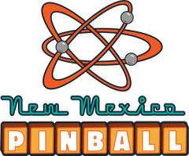

Pinball glossaryWhat a VUK, a cradle or a playfield multiplier is, in plain language.→
Tournament formatsStrikes, target match play, Amazing Race, pingolf and more, broken down.→

New Mexico PinballVisit newmexicopinball.com for tournament schedules and other event information!↗
Questions? Corrections?Wrong tip? Outdated guide? General thoughts? Email Garbo at garbo [at] garbosguide.lol✉
Venue lineups come from Pinball Map, licensed CC BY-SA 4.0. Each venue page links to that venue’s own Pinball Map listing, which is the place to check hours and location. Community tips are summarized from PinTips on Match Play. Strategy draws on Kineticist tutorials, The Pinball Primer, Pinball Rulesheets and the Tilt Forums archive; each machine page links its sources.
Field notes come from players using the guide, are anonymous, and may already be out of date. Not affiliated with any venue or operator.
Field notes of Garbo, a visitor who fell for pinball. Translated by SAPO Studios.